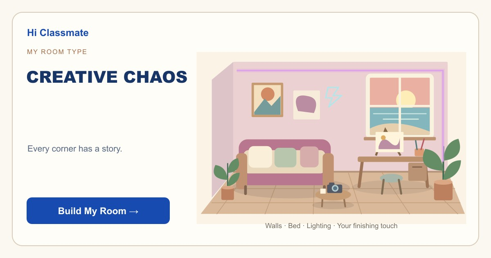

Build Your Dream Room
CREATIVE CHAOS 🎨
Every corner has a story.
Your dream room looks like someone actually lives, thinks and makes things here. You are drawn to details that can start an idea or keep a memory alive, even when they do not match a tidy decorating rule. A corner can be practical one day and become part of a new project the next. The fun comes from finding a combination that feels unmistakably yours. You do not need to explain every choice to make it work. Give your favorite experiments enough room to shine, and keep one clear landing spot for whatever you are excited to try tomorrow.
Start Designing →